项目简介
本作品是基于 Android 平台 的手机 APP，实现了一个基于 自监督学习 的伪装语音检测系统。该系统能够有效、鲁棒地抵抗 重放攻击、拼接攻击、语音转换（Voice Conversion，VC）攻击 等多种常见的伪装语音攻击手段，旨在保障语音交互场景下的用户安全。
在 Android 系统中，我们将该伪装语音检测系统作为一个核心模块，嵌入基于 科大讯飞语音识别 API 平台 构建的说话人识别流程中，最终实现了一个能够抵御多种伪装语音攻击、安全可靠的说话人识别（声纹识别）系统。
此 Web 页面用于介绍项目背景、核心技术与功能特性。
核心功能与技术特性
- 🛡️ 先进检测算法： 采用基于 自监督学习 的模型，无需大量攻击样本即可有效识别伪造语音。
- 🚫 多攻击防御： 可靠抵御包括 重放、拼接、语音转换 (VC) 在内的多种主流伪装语音攻击。
- 🤖 Android 平台集成： 以 APP 形式运行于 Android 设备，提供移动端安全解决方案。
- 🔊 讯飞 API 融合： 无缝嵌入科大讯飞语音识别流程，增强现有声纹识别系统的安全性。
- 📈 高鲁棒性与效率： 系统在保证检测准确率的同时，兼顾了运行效率和对环境变化的鲁棒性。
- 🔒 保障识别安全： 为声纹注册、登录等身份验证环节提供关键的安全防护层。
集成系统
将伪装语音检测模块无缝集成到基于科大讯飞 SDK 的说话人识别流程中。
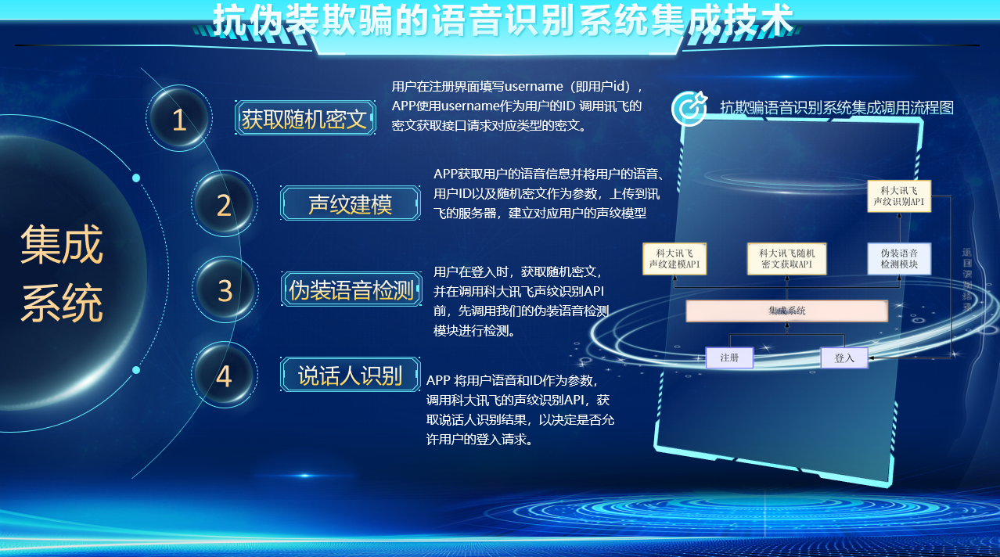
特色描述
系统具备高准确率、强鲁棒性、快速响应等特点，有效提升语音交互安全性。
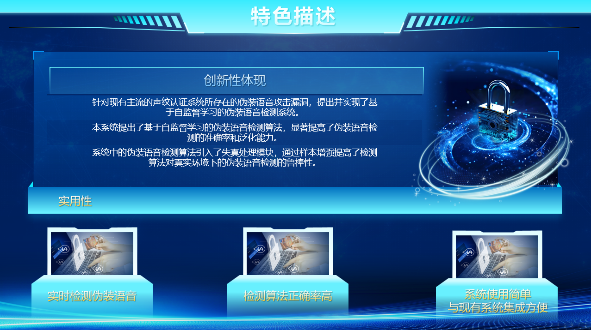
系统架构与关键技术
系统架构
本 Android APP 系统采用分层设计，主要包含以下三个层次：
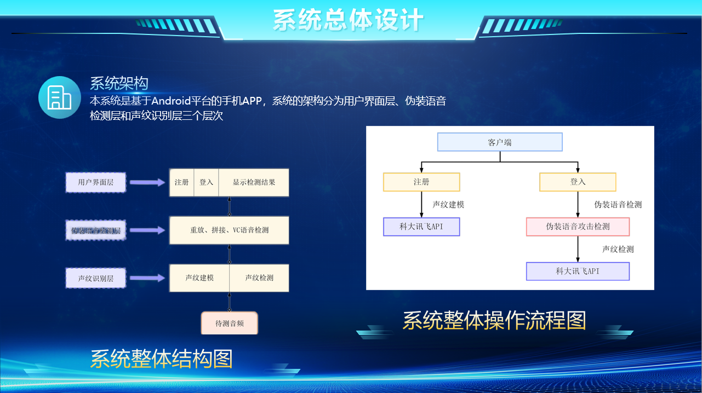
- 用户界面层 (UI Layer): 负责用户交互，提供注册和登录功能。界面设计注重用户习惯和审美，引导用户通过麦克风输入语音。检测结果会反馈给该层，决定是否允许用户进入下一步或提示伪造风险。
- 伪装语音检测层 (Detection Layer): 系统的核心。接收输入语音，判断其为真实语音还是伪装语音。内部包含两大模块：
- 编码模块: 以 自监督编码器 为核心，在混合数据上训练，提取具有强鲁棒性和高区分度的语音特征。
- 判别模块: 结合编码器，训练出的 伪装语音判别器，能够准确、快速地识别真实与伪装语音。
- 说话人识别层 (Recognition Layer): 调用 科大讯飞说话人识别 SDK 实现。负责声纹模型的建立（注册）和比对（登录）。当接收到来自检测层的真实语音后，进行身份验证，并将最终结果（允许/拒绝登录）通知用户界面层。
关键技术概览
本项目采用的关键技术思路包括：
- 伪装语音特性分析： 深入分析了录音重放、语音拼接、语音转换等攻击方式产生的信号失真特性，为检测算法的设计提供了理论依据。
- 自监督检测系统： 构建了基于自监督学习的伪装语音检测系统（编码模块+判别模块），实现了高效、鲁棒的检测能力，降低了对大量标注攻击样本的依赖。
- 抗欺骗系统集成： 将提出的自监督检测系统无缝集成到科大讯飞说话人识别平台，形成了一套端到端的、能够有效抵御多种伪装攻击的语音识别解决方案。
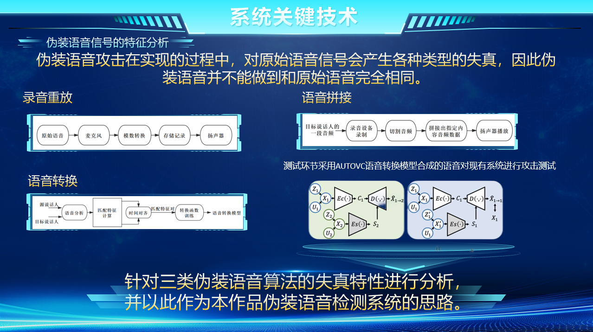
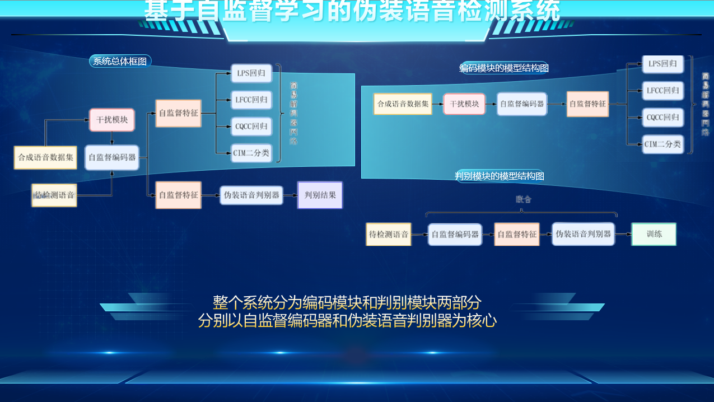
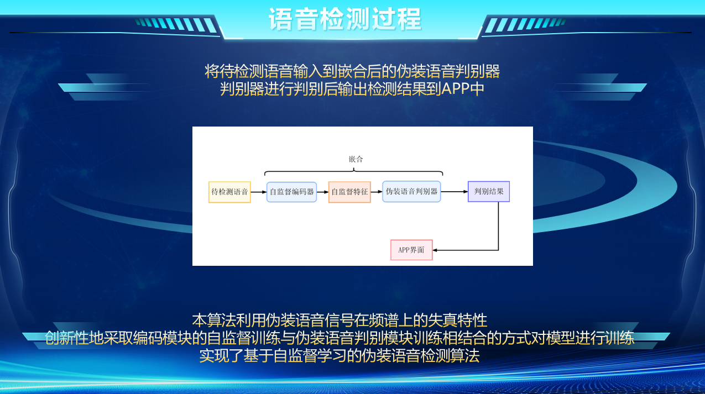
作品测试
对系统进行了全面的测试，以验证其在不同场景下的性能和鲁棒性。
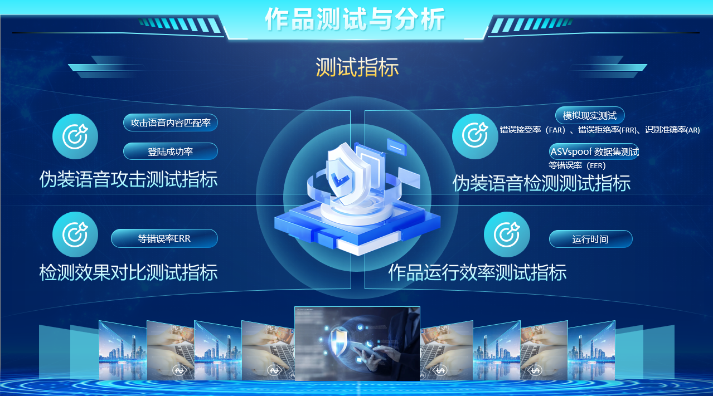
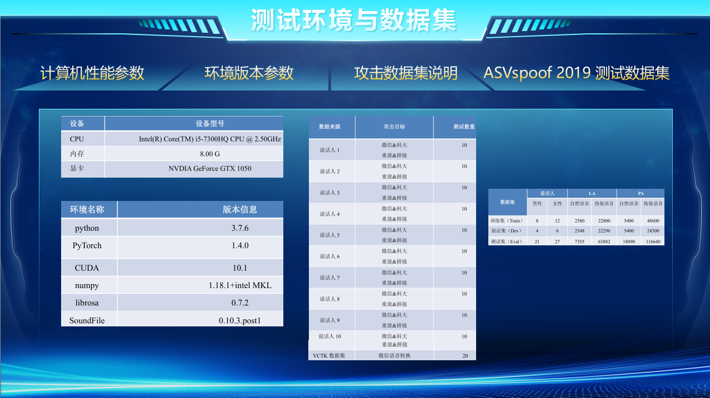
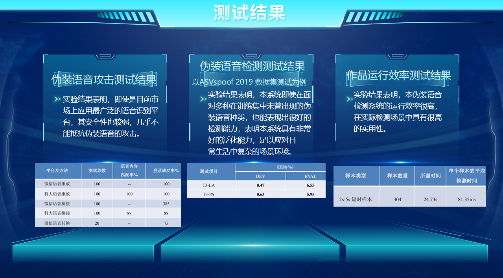
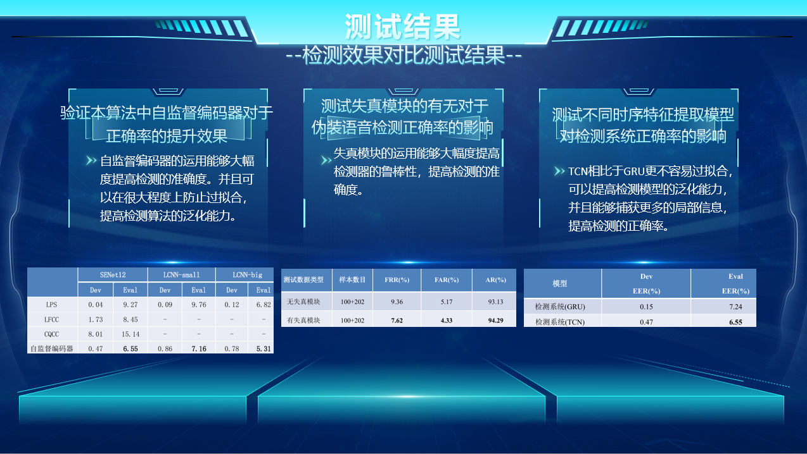
应用界面
以下展示了"听声无恙"Android应用的主要界面和核心流程：
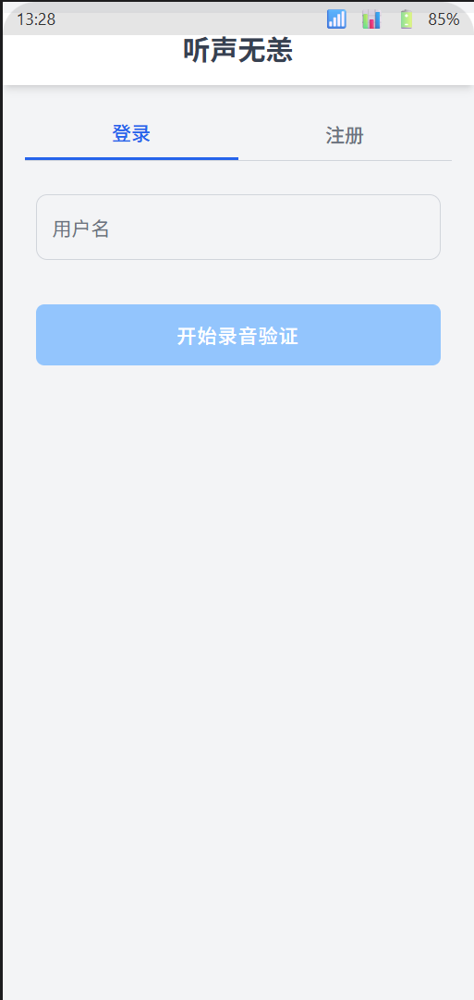
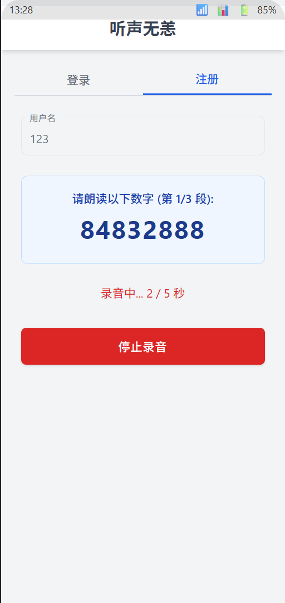
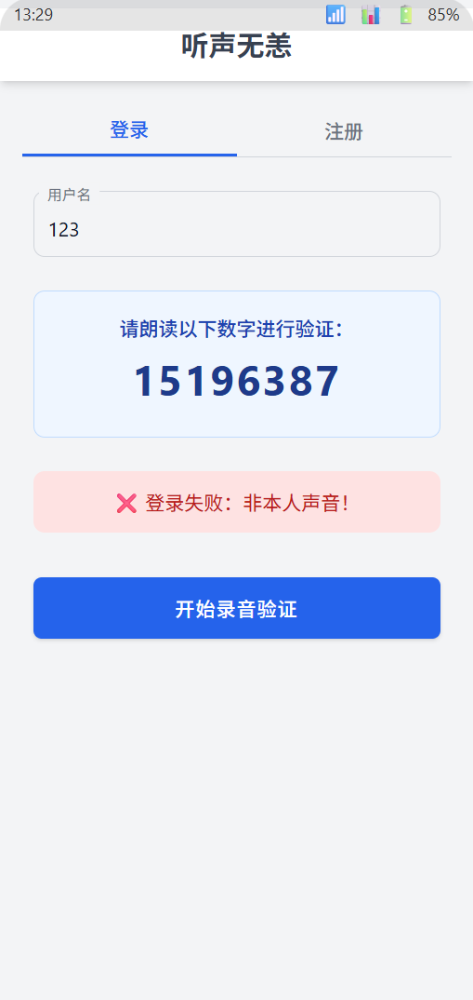
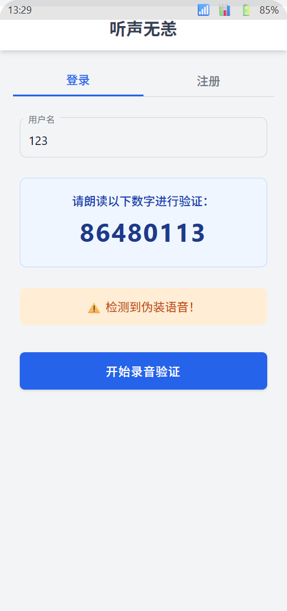
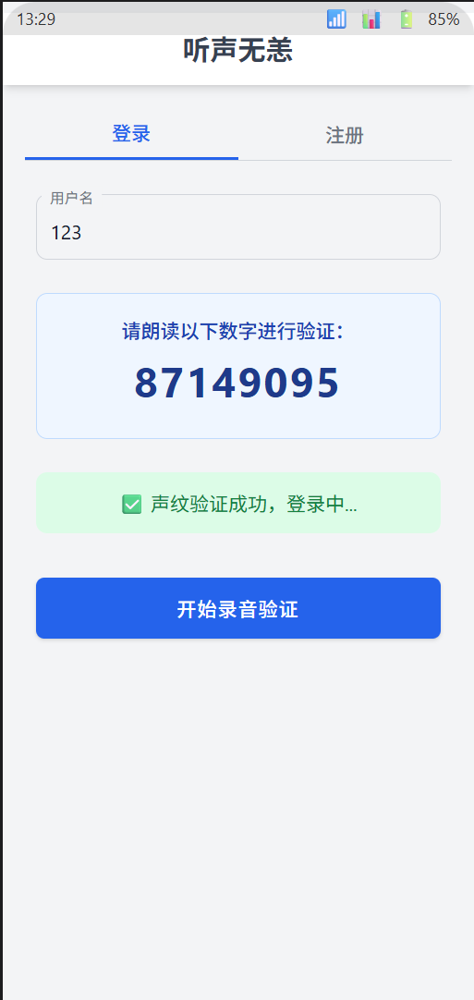
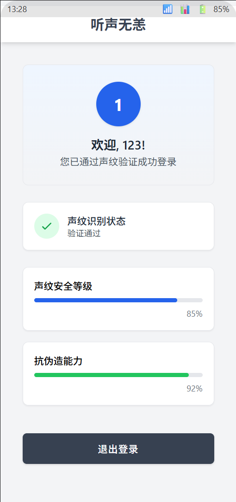
功能演示
下面的视频演示了应用的主要功能流程，包括声纹注册、不同情况下的登录尝试（本人、非本人、伪造语音）以及系统的检测反馈：